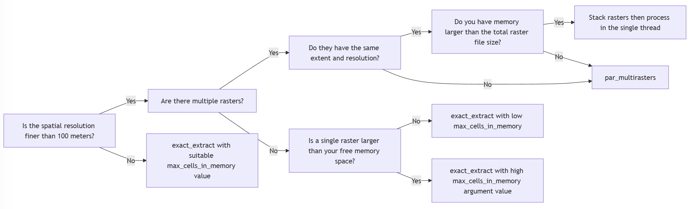

Computation of Spatial Data by Hierarchical and Objective Partitioning of Inputs for Parallel Processing
Objective
This package automates parallelization in spatial operations with chopin functions as well as sf/terra functions. With GDAL-compatible files and database tables, chopin functions help to calculate spatial variables from vector and raster data with no external software requirements. All who need to perform geospatial operations with large datasets may find this package useful to accelerate the covariate calculation process for further analysis and modeling may find the main functions useful. We assume that users have basic knowledge of geographic information system data models, coordinate systems and transformations, spatial operations, and raster-vector overlay.
Overview
chopin encapsulates the parallel processing of spatial computation into three steps. First, users will define the parallelization strategy, which is one of many supported in future and future.mirai packages. Users always need to register parallel workers with future before running the par_*() functions that will be introduced below.
future::plan(future.mirai::mirai_multisession, workers = 4L)
# future::multisession, future::cluster are available,
# See future.batchtools and future.callr for other options
# the number of workers are up to users' choiceSecond, users choose the proper data parallelization configuration by creating a grid partition of the processing extent, defining the field name with values that are hierarchically coded, or entering multiple raster file paths into par_multirasters(). Finally, users run par_*() function with the configurations set above to compute spatial variables from input data in parallel:
- `par_grid`: parallelize over artificial grid polygons that are generated from the maximum extent of inputs. `par_pad_grid` is used to generate the grid polygons before running this function.
- `par_hierarchy`: parallelize over hierarchy coded in identifier fields (for example, census blocks in each county in the US)
- `par_multirasters`: parallelize over multiple raster filesFor grid partitioning, the entire study area will be divided into partly overlapped grids. We suggest two flowcharts to help which function to use for parallel processing below. The upper flowchart is raster-oriented and the lower is vector-oriented. They are supplementary to each other. When a user follows the raster-oriented one, they might visit the vector-oriented flowchart at each end of the raster-oriented flowchart.
Processing functions accept terra/sf classes for spatial data. Raster-vector overlay is done with exactextractr. Three helper functions encapsulate multiple geospatial data calculation steps over multiple CPU threads.
- `extract_at`: extract raster values with point buffers or polygons with or without kernel weights
- `summarize_sedc`: calculate sums of [exponentially decaying contributions](https://mserre.sph.unc.edu/BMElab_web/SEDCtutorial/index.html)
- `summarize_aw`: area-weighted covariates based on target and reference polygonsFunction selection guide
We provide two flowcharts to help users choose the right function for parallel processing. The raster-oriented flowchart is for users who want to start with raster data, and the vector-oriented flowchart is for users with large vector data.
In raster-oriented selection, we suggest four factors to consider:
- Number of raster files: for multiple files,
par_multirastersis recommended. When there are multiple rasters that share the same extent and resolution, consider stacking the rasters into multilayer SpatRaster object by callingterra::rast(filenames). - Raster resolution: We suggest 100 meters as a threshold. Rasters with resolution coarser than 100 meters and a few layers would be better for the direct call of
exactextractr::exact_extract(). - Raster extent: Using
SpatRasterinexactextractr::exact_extract()is often minimally affected by the raster extent. - Memory size:
max_cells_in_memoryargument value ofexactextractr::exact_extract(), raster resolution, and the number of layers inSpatRasterare multiplicatively related to the memory usage.

For vector-oriented selection, we suggest three factors to consider:
- Number of features: When the number of features is over 100,000, consider using
par_gridorpar_hierarchyto split the data into smaller chunks. - Hierarchical structure: If the data has a hierarchical structure, consider using
par_hierarchyto parallelize the operation. - Data grouping: If the data needs to be grouped in similar sizes, consider using
par_pad_balancedorpar_pad_gridwithmode = "grid_quantile".

Installation
chopin can be installed using remotes::install_github (also possible with pak::pak or devtools::install_github).
rlang::check_installed("remotes")
remotes::install_github("NIEHS/chopin")Examples
Examples will navigate par_grid, par_hierarchy, and par_multirasters functions in chopin to parallelize geospatial operations.
# check and install packages to run examples
pkgs <- c("chopin", "dplyr", "sf", "terra", "future", "future.mirai", "mirai")
# install packages if anything is unavailable
rlang::check_installed(pkgs)
library(chopin)
library(dplyr)
#>
#> Attaching package: 'dplyr'
#> The following objects are masked from 'package:stats':
#>
#> filter, lag
#> The following objects are masked from 'package:base':
#>
#> intersect, setdiff, setequal, union
library(sf)
#> Linking to GEOS 3.12.1, GDAL 3.8.4, PROJ 9.3.1; sf_use_s2() is TRUE
library(terra)
#> terra 1.7.78
library(future)
library(future.mirai)
library(mirai)
# disable spherical geometries
sf::sf_use_s2(FALSE)
#> Spherical geometry (s2) switched off
# parallelization-safe random number generator
set.seed(2024, kind = "L'Ecuyer-CMRG")
par_grid: parallelize over artificial grid polygons
Please refer to a small example below for extracting mean altitude values at circular point buffers and census tracts in North Carolina. Before running code chunks below, set the cloned chopin repository as your working directory with setwd()
ncpoly <- system.file("shape/nc.shp", package = "sf")
ncsf <- sf::read_sf(ncpoly)
ncsf <- sf::st_transform(ncsf, "EPSG:5070")
plot(sf::st_geometry(ncsf))
Generate random points in NC
Ten thousands random point locations were generated inside the counties of North Carolina.
ncpoints <- sf::st_sample(ncsf, 1e4)
ncpoints <- sf::st_as_sf(ncpoints)
ncpoints$pid <- sprintf("PID-%05d", seq(1, 1e4))
plot(sf::st_geometry(ncpoints))
Target raster dataset: Shuttle Radar Topography Mission
We use an elevation dataset with and a moderate spatial resolution (approximately 400 meters or 0.25 miles).
# data preparation
wdir <- system.file("extdata", package = "chopin")
srtm <- file.path(wdir, "nc_srtm15_otm.tif")
# terra SpatRaster objects are wrapped when exported to rds file
srtm_ras <- terra::rast(srtm)
terra::crs(srtm_ras) <- "EPSG:5070"
srtm_ras
#> class : SpatRaster
#> dimensions : 1534, 2281, 1 (nrow, ncol, nlyr)
#> resolution : 391.5026, 391.5026 (x, y)
#> extent : 1012872, 1905890, 1219961, 1820526 (xmin, xmax, ymin, ymax)
#> coord. ref. : NAD83 / Conus Albers (EPSG:5070)
#> source : nc_srtm15_otm.tif
#> name : srtm15
#> min value : -3589.291
#> max value : 1946.400
terra::plot(srtm_ras)
# ncpoints_tr <- terra::vect(ncpoints)
system.time(
ncpoints_srtm <-
chopin::extract_at(
x = srtm,
y = ncpoints,
id = "pid",
mode = "buffer",
radius = 1e4L # 10,000 meters (10 km)
)
)
#> Input is a character. Attempt to read it with terra::rast...
#> user system elapsed
#> 5.008 0.038 5.097Generate regular grid computational regions
chopin::par_pad_grid() takes a spatial dataset to generate regular grid polygons with nx and ny arguments with padding. Users will have both overlapping (by the degree of radius) and non-overlapping grids, both of which will be utilized to split locations and target datasets into sub-datasets for efficient processing.
compregions <-
chopin::par_pad_grid(
ncpoints,
mode = "grid",
nx = 2L,
ny = 2L,
padding = 1e4L
)
#> Switch sf class to terra...
#> Switch terra class to sf...compregions is a list object with two elements named original (non-overlapping grid polygons) and padded (overlapping by padding). The figures below illustrate the grid polygons with and without overlaps.
names(compregions)
#> [1] "original" "padded"
oldpar <- par()
par(mfrow = c(2, 1))
terra::plot(
terra::vect(compregions$original),
main = "Original grids"
)
terra::plot(
terra::vect(compregions$padded),
main = "Padded grids"
)
Parallel processing
Using the grid polygons, we distribute the task of averaging elevations at 10,000 circular buffer polygons, which are generated from the random locations, with 10 kilometers radius by chopin::par_grid(). Users always need to register multiple CPU threads (logical cores) for parallelization. chopin::par_*() functions are flexible in terms of supporting generic spatial operations in sf and terra, especially where two datasets are involved. Users can inject generic functions’ arguments (parameters) by writing them in the ellipsis (...) arguments, as demonstrated below:
future::plan(future.mirai::mirai_multisession, workers = 4L)
system.time(
ncpoints_srtm_mthr <-
par_grid(
grids = compregions,
fun_dist = extract_at,
x = srtm,
y = ncpoints,
id = "pid",
radius = 1e4L,
.standalone = FALSE
)
)
#> ℹ Input is not a character.
#> Input is a character. Attempt to read it with terra::rast...
#> ℹ Task at CGRIDID: 1 is successfully dispatched.
#>
#> Input is a character. Attempt to read it with terra::rast...
#> ℹ Task at CGRIDID: 2 is successfully dispatched.
#>
#> Input is a character. Attempt to read it with terra::rast...
#> ℹ Task at CGRIDID: 3 is successfully dispatched.
#>
#> Input is a character. Attempt to read it with terra::rast...
#> ℹ Task at CGRIDID: 4 is successfully dispatched.
#> user system elapsed
#> 0.330 0.003 7.401
ncpoints_srtm <-
extract_at(
x = srtm,
y = ncpoints,
id = "pid",
radius = 1e4L
)
#> Input is a character. Attempt to read it with terra::rast...
colnames(ncpoints_srtm_mthr)[2] <- "mean_par"
ncpoints_compar <- merge(ncpoints_srtm, ncpoints_srtm_mthr)
# Are the calculations equal?
all.equal(ncpoints_compar$mean, ncpoints_compar$mean_par)
#> [1] TRUE
ncpoints_s <-
merge(ncpoints, ncpoints_srtm)
ncpoints_m <-
merge(ncpoints, ncpoints_srtm_mthr)
plot(ncpoints_s[, "mean"], main = "Single-thread", pch = 19, cex = 0.33)
plot(ncpoints_m[, "mean_par"], main = "Multi-thread", pch = 19, cex = 0.33)
chopin::par_hierarchy(): parallelize geospatial computations using intrinsic data hierarchy
We usually have nested/exhaustive hierarchies in real-world datasets. For example, land is organized by administrative/jurisdictional borders where multiple levels exist. In the U.S. context, a state consists of several counties, counties are split into census tracts, and they have a group of block groups. chopin::par_hierarchy() leverages such hierarchies to parallelize geospatial operations, which means that a group of lower-level geographic units in a higher-level geography is assigned to a process. A demonstration below shows that census tracts are grouped by their counties then each county will be processed in a CPU thread.
Read data
# nc_hierarchy.gpkg includes two layers: county and tracts
path_nchrchy <- file.path(wdir, "nc_hierarchy.gpkg")
nc_data <- path_nchrchy
nc_county <- sf::st_read(nc_data, layer = "county")
#> Reading layer `county' from data source
#> `/tmp/RtmpzRLuhC/temp_libpath433aa6a79610a/chopin/extdata/nc_hierarchy.gpkg'
#> using driver `GPKG'
#> Simple feature collection with 100 features and 1 field
#> Geometry type: POLYGON
#> Dimension: XY
#> Bounding box: xmin: 1054155 ymin: 1341756 xmax: 1838923 ymax: 1690176
#> Projected CRS: NAD83 / Conus Albers
nc_tracts <- sf::st_read(nc_data, layer = "tracts")
#> Reading layer `tracts' from data source
#> `/tmp/RtmpzRLuhC/temp_libpath433aa6a79610a/chopin/extdata/nc_hierarchy.gpkg'
#> using driver `GPKG'
#> Simple feature collection with 2672 features and 1 field
#> Geometry type: MULTIPOLYGON
#> Dimension: XY
#> Bounding box: xmin: 1054155 ymin: 1341756 xmax: 1838923 ymax: 1690176
#> Projected CRS: NAD83 / Conus Albers
# reproject to Conus Albers Equal Area
nc_county <- sf::st_transform(nc_county, "EPSG:5070")
nc_tracts <- sf::st_transform(nc_tracts, "EPSG:5070")
nc_tracts$COUNTY <- substr(nc_tracts$GEOID, 1, 5)Extract average SRTM elevations by single and multiple threads
# single-thread
system.time(
nc_elev_tr_single <-
chopin::extract_at(
x = srtm,
y = nc_tracts,
id = "GEOID"
)
)
#> Input is a character. Attempt to read it with terra::rast...
#> user system elapsed
#> 0.521 0.010 0.531
# hierarchical parallelization
system.time(
nc_elev_tr_distr <-
chopin::par_hierarchy(
regions = nc_county, # higher level geometry
regions_id = "GEOID", # higher level unique id
fun_dist = extract_at,
x = srtm,
y = nc_tracts, # lower level geometry
id = "GEOID", # lower level unique id
func = "mean"
)
)
#> ℹ Input is not a character.
#> ℹ GEOID is used to stratify the process.
#> Input is a character. Attempt to read it with terra::rast...ℹ Your input function at 37037 is dispatched.
#> Input is a character. Attempt to read it with terra::rast...ℹ Your input function at 37001 is dispatched.
#> Input is a character. Attempt to read it with terra::rast...ℹ Your input function at 37057 is dispatched.
#> Input is a character. Attempt to read it with terra::rast...ℹ Your input function at 37069 is dispatched.
#> Input is a character. Attempt to read it with terra::rast...ℹ Your input function at 37155 is dispatched.
#> Input is a character. Attempt to read it with terra::rast...ℹ Your input function at 37109 is dispatched.
#> Input is a character. Attempt to read it with terra::rast...ℹ Your input function at 37027 is dispatched.
#> Input is a character. Attempt to read it with terra::rast...ℹ Your input function at 37063 is dispatched.
#> Input is a character. Attempt to read it with terra::rast...ℹ Your input function at 37145 is dispatched.
#> Input is a character. Attempt to read it with terra::rast...ℹ Your input function at 37115 is dispatched.
#> Input is a character. Attempt to read it with terra::rast...ℹ Your input function at 37151 is dispatched.
#> Input is a character. Attempt to read it with terra::rast...ℹ Your input function at 37131 is dispatched.
#> Input is a character. Attempt to read it with terra::rast...ℹ Your input function at 37013 is dispatched.
#> Input is a character. Attempt to read it with terra::rast...ℹ Your input function at 37159 is dispatched.
#> Input is a character. Attempt to read it with terra::rast...ℹ Your input function at 37051 is dispatched.
#> Input is a character. Attempt to read it with terra::rast...ℹ Your input function at 37153 is dispatched.
#> Input is a character. Attempt to read it with terra::rast...ℹ Your input function at 37093 is dispatched.
#> Input is a character. Attempt to read it with terra::rast...ℹ Your input function at 37025 is dispatched.
#> Input is a character. Attempt to read it with terra::rast...ℹ Your input function at 37029 is dispatched.
#> Input is a character. Attempt to read it with terra::rast...ℹ Your input function at 37169 is dispatched.
#> Input is a character. Attempt to read it with terra::rast...ℹ Your input function at 37031 is dispatched.
#> Input is a character. Attempt to read it with terra::rast...ℹ Your input function at 37005 is dispatched.
#> Input is a character. Attempt to read it with terra::rast...ℹ Your input function at 37139 is dispatched.
#> Input is a character. Attempt to read it with terra::rast...ℹ Your input function at 37193 is dispatched.
#> Input is a character. Attempt to read it with terra::rast...ℹ Your input function at 37003 is dispatched.
#> Input is a character. Attempt to read it with terra::rast...ℹ Your input function at 37083 is dispatched.
#> Input is a character. Attempt to read it with terra::rast...ℹ Your input function at 37163 is dispatched.
#> Input is a character. Attempt to read it with terra::rast...ℹ Your input function at 37189 is dispatched.
#> Input is a character. Attempt to read it with terra::rast...ℹ Your input function at 37173 is dispatched.
#> Input is a character. Attempt to read it with terra::rast...ℹ Your input function at 37011 is dispatched.
#> Input is a character. Attempt to read it with terra::rast...ℹ Your input function at 37045 is dispatched.
#> Input is a character. Attempt to read it with terra::rast...ℹ Your input function at 37125 is dispatched.
#> Input is a character. Attempt to read it with terra::rast...ℹ Your input function at 37067 is dispatched.
#> Input is a character. Attempt to read it with terra::rast...ℹ Your input function at 37077 is dispatched.
#> Input is a character. Attempt to read it with terra::rast...ℹ Your input function at 37185 is dispatched.
#> Input is a character. Attempt to read it with terra::rast...ℹ Your input function at 37137 is dispatched.
#> Input is a character. Attempt to read it with terra::rast...ℹ Your input function at 37033 is dispatched.
#> Input is a character. Attempt to read it with terra::rast...ℹ Your input function at 37107 is dispatched.
#> Input is a character. Attempt to read it with terra::rast...ℹ Your input function at 37075 is dispatched.
#> Input is a character. Attempt to read it with terra::rast...ℹ Your input function at 37073 is dispatched.
#> Input is a character. Attempt to read it with terra::rast...ℹ Your input function at 37161 is dispatched.
#> Input is a character. Attempt to read it with terra::rast...ℹ Your input function at 37187 is dispatched.
#> Input is a character. Attempt to read it with terra::rast...ℹ Your input function at 37007 is dispatched.
#> Input is a character. Attempt to read it with terra::rast...ℹ Your input function at 37135 is dispatched.
#> Input is a character. Attempt to read it with terra::rast...ℹ Your input function at 37049 is dispatched.
#> Input is a character. Attempt to read it with terra::rast...ℹ Your input function at 37195 is dispatched.
#> Input is a character. Attempt to read it with terra::rast...ℹ Your input function at 37061 is dispatched.
#> Input is a character. Attempt to read it with terra::rast...ℹ Your input function at 37087 is dispatched.
#> Input is a character. Attempt to read it with terra::rast...ℹ Your input function at 37081 is dispatched.
#> Input is a character. Attempt to read it with terra::rast...ℹ Your input function at 37099 is dispatched.
#> Input is a character. Attempt to read it with terra::rast...ℹ Your input function at 37097 is dispatched.
#> Input is a character. Attempt to read it with terra::rast...ℹ Your input function at 37091 is dispatched.
#> Input is a character. Attempt to read it with terra::rast...ℹ Your input function at 37149 is dispatched.
#> Input is a character. Attempt to read it with terra::rast...ℹ Your input function at 37165 is dispatched.
#> Input is a character. Attempt to read it with terra::rast...ℹ Your input function at 37085 is dispatched.
#> Input is a character. Attempt to read it with terra::rast...ℹ Your input function at 37105 is dispatched.
#> Input is a character. Attempt to read it with terra::rast...ℹ Your input function at 37017 is dispatched.
#> Input is a character. Attempt to read it with terra::rast...ℹ Your input function at 37039 is dispatched.
#> Input is a character. Attempt to read it with terra::rast...ℹ Your input function at 37035 is dispatched.
#> Input is a character. Attempt to read it with terra::rast...ℹ Your input function at 37177 is dispatched.
#> Input is a character. Attempt to read it with terra::rast...ℹ Your input function at 37113 is dispatched.
#> Input is a character. Attempt to read it with terra::rast...ℹ Your input function at 37143 is dispatched.
#> Input is a character. Attempt to read it with terra::rast...ℹ Your input function at 37095 is dispatched.
#> Input is a character. Attempt to read it with terra::rast...ℹ Your input function at 37071 is dispatched.
#> Input is a character. Attempt to read it with terra::rast...ℹ Your input function at 37101 is dispatched.
#> Input is a character. Attempt to read it with terra::rast...ℹ Your input function at 37015 is dispatched.
#> Input is a character. Attempt to read it with terra::rast...ℹ Your input function at 37167 is dispatched.
#> Input is a character. Attempt to read it with terra::rast...ℹ Your input function at 37079 is dispatched.
#> Input is a character. Attempt to read it with terra::rast...ℹ Your input function at 37129 is dispatched.
#> Input is a character. Attempt to read it with terra::rast...ℹ Your input function at 37147 is dispatched.
#> Input is a character. Attempt to read it with terra::rast...ℹ Your input function at 37141 is dispatched.
#> Input is a character. Attempt to read it with terra::rast...ℹ Your input function at 37179 is dispatched.
#> Input is a character. Attempt to read it with terra::rast...ℹ Your input function at 37121 is dispatched.
#> Input is a character. Attempt to read it with terra::rast...ℹ Your input function at 37133 is dispatched.
#> Input is a character. Attempt to read it with terra::rast...ℹ Your input function at 37065 is dispatched.
#> Input is a character. Attempt to read it with terra::rast...ℹ Your input function at 37119 is dispatched.
#> Input is a character. Attempt to read it with terra::rast...ℹ Your input function at 37199 is dispatched.
#> Input is a character. Attempt to read it with terra::rast...ℹ Your input function at 37197 is dispatched.
#> Input is a character. Attempt to read it with terra::rast...ℹ Your input function at 37023 is dispatched.
#> Input is a character. Attempt to read it with terra::rast...ℹ Your input function at 37191 is dispatched.
#> Input is a character. Attempt to read it with terra::rast...ℹ Your input function at 37059 is dispatched.
#> Input is a character. Attempt to read it with terra::rast...ℹ Your input function at 37111 is dispatched.
#> Input is a character. Attempt to read it with terra::rast...ℹ Your input function at 37183 is dispatched.
#> Input is a character. Attempt to read it with terra::rast...ℹ Your input function at 37053 is dispatched.
#> Input is a character. Attempt to read it with terra::rast...ℹ Your input function at 37103 is dispatched.
#> Input is a character. Attempt to read it with terra::rast...ℹ Your input function at 37041 is dispatched.
#> Input is a character. Attempt to read it with terra::rast...ℹ Your input function at 37021 is dispatched.
#> Input is a character. Attempt to read it with terra::rast...ℹ Your input function at 37157 is dispatched.
#> Input is a character. Attempt to read it with terra::rast...ℹ Your input function at 37117 is dispatched.
#> Input is a character. Attempt to read it with terra::rast...ℹ Your input function at 37089 is dispatched.
#> Input is a character. Attempt to read it with terra::rast...ℹ Your input function at 37127 is dispatched.
#> Input is a character. Attempt to read it with terra::rast...ℹ Your input function at 37009 is dispatched.
#> Input is a character. Attempt to read it with terra::rast...ℹ Your input function at 37019 is dispatched.
#> Input is a character. Attempt to read it with terra::rast...ℹ Your input function at 37123 is dispatched.
#> Input is a character. Attempt to read it with terra::rast...ℹ Your input function at 37181 is dispatched.
#> Input is a character. Attempt to read it with terra::rast...ℹ Your input function at 37175 is dispatched.
#> Input is a character. Attempt to read it with terra::rast...ℹ Your input function at 37171 is dispatched.
#> Input is a character. Attempt to read it with terra::rast...ℹ Your input function at 37043 is dispatched.
#> Input is a character. Attempt to read it with terra::rast...ℹ Your input function at 37055 is dispatched.
#> Input is a character. Attempt to read it with terra::rast...ℹ Your input function at 37047 is dispatched.
#> user system elapsed
#> 0.234 0.022 1.957
par_multirasters(): parallelize over multiple rasters
There is a common case of having a large group of raster files at which the same operation should be performed. chopin::par_multirasters() is for such cases. An example below demonstrates where we have five elevation raster files to calculate the average elevation at counties in North Carolina.
# nccnty <- sf::st_read(nc_data, layer = "county")
ncelev <- terra::rast(srtm)
terra::crs(ncelev) <- "EPSG:5070"
names(ncelev) <- c("srtm15")
tdir <- tempdir()
terra::writeRaster(ncelev, file.path(tdir, "test1.tif"), overwrite = TRUE)
terra::writeRaster(ncelev, file.path(tdir, "test2.tif"), overwrite = TRUE)
terra::writeRaster(ncelev, file.path(tdir, "test3.tif"), overwrite = TRUE)
terra::writeRaster(ncelev, file.path(tdir, "test4.tif"), overwrite = TRUE)
terra::writeRaster(ncelev, file.path(tdir, "test5.tif"), overwrite = TRUE)
# check if the raster files were exported as expected
testfiles <- list.files(tdir, pattern = "*.tif$", full.names = TRUE)
testfiles
#> [1] "/tmp/RtmpgrTtLh/test1.tif" "/tmp/RtmpgrTtLh/test2.tif"
#> [3] "/tmp/RtmpgrTtLh/test3.tif" "/tmp/RtmpgrTtLh/test4.tif"
#> [5] "/tmp/RtmpgrTtLh/test5.tif"
system.time(
res <-
chopin::par_multirasters(
filenames = testfiles,
fun_dist = extract_at,
x = ncelev,
y = nc_county,
id = "GEOID",
func = "mean"
)
)
#> ℹ Input is not a character.
#> Input is a character. Attempt to read it with terra::rast...
#> ℹ Your input function at /tmp/RtmpgrTtLh/test1.tif is dispatched.
#>
#> Input is a character. Attempt to read it with terra::rast...
#> ℹ Your input function at /tmp/RtmpgrTtLh/test2.tif is dispatched.
#>
#> Input is a character. Attempt to read it with terra::rast...
#> ℹ Your input function at /tmp/RtmpgrTtLh/test3.tif is dispatched.
#>
#> Input is a character. Attempt to read it with terra::rast...
#> ℹ Your input function at /tmp/RtmpgrTtLh/test4.tif is dispatched.
#>
#> Input is a character. Attempt to read it with terra::rast...
#> ℹ Your input function at /tmp/RtmpgrTtLh/test5.tif is dispatched.
#> user system elapsed
#> 1.136 0.151 2.335
knitr::kable(head(res))| mean | base_raster |
|---|---|
| 136.80203 | /tmp/RtmpgrTtLh/test1.tif |
| 189.76170 | /tmp/RtmpgrTtLh/test1.tif |
| 231.16968 | /tmp/RtmpgrTtLh/test1.tif |
| 98.03845 | /tmp/RtmpgrTtLh/test1.tif |
| 41.23463 | /tmp/RtmpgrTtLh/test1.tif |
| 270.96933 | /tmp/RtmpgrTtLh/test1.tif |
# remove temporary raster files
file.remove(testfiles)
#> [1] TRUE TRUE TRUE TRUE TRUEParallelization of a generic geospatial operation
Other than chopin processing functions, chopin::par_*() functions support generic geospatial operations. An example below uses terra::nearest(), which gets the nearest feature’s attributes, inside chopin::par_grid().
path_ncrd1 <- file.path(wdir, "ncroads_first.gpkg")
# Generate 5000 random points
pnts <- sf::st_sample(nc_county, 5000)
pnts <- sf::st_as_sf(pnts)
# assign identifiers
pnts$pid <- sprintf("RPID-%04d", seq(1, 5000))
rd1 <- sf::st_read(path_ncrd1)
#> Reading layer `ncroads_first' from data source
#> `/tmp/RtmpzRLuhC/temp_libpath433aa6a79610a/chopin/extdata/ncroads_first.gpkg'
#> using driver `GPKG'
#> Simple feature collection with 620 features and 4 fields
#> Geometry type: MULTILINESTRING
#> Dimension: XY
#> Bounding box: xmin: 1152512 ymin: 1390719 xmax: 1748367 ymax: 1662294
#> Projected CRS: NAD83 / Conus Albers
# reproject
pntst <- sf::st_transform(pnts, "EPSG:5070")
rd1t <- sf::st_transform(rd1, "EPSG:5070")
# generate grids
nccompreg <-
chopin::par_pad_grid(
input = pntst,
mode = "grid",
nx = 4L,
ny = 2L,
padding = 5e4L
)
#> Switch sf class to terra...
#> Switch terra class to sf...The figure below shows the padded grids (50 kilometers), primary roads, and points. Primary roads will be selected by a padded grid per iteration and used to calculate the distance from each point to the nearest primary road. Padded grids and their overlapping areas will look different according to padding argument in chopin::par_pad_grid().
# plot
terra::plot(nccompreg$padded, border = "orange")
terra::plot(terra::vect(ncsf), add = TRUE)
terra::plot(rd1t, col = "blue", add = TRUE)
#> Warning in plot.sf(rd1t, col = "blue", add = TRUE): ignoring all but the first
#> attribute
terra::plot(pntst, add = TRUE, cex = 0.3)
legend(1.02e6, 1.72e6,
legend = c("Computation grids (50km padding)", "Major roads"),
lty = 1, lwd = 1, col = c("orange", "blue"),
cex = 0.5)
# terra::nearest run
system.time(
restr <- terra::nearest(x = terra::vect(pntst), y = terra::vect(rd1t))
)
#> user system elapsed
#> 0.377 0.000 0.378
pnt_path <- file.path(tdir, "pntst.gpkg")
sf::st_write(pntst, pnt_path)
#> Writing layer `pntst' to data source `/tmp/RtmpgrTtLh/pntst.gpkg' using driver `GPKG'
#> Writing 5000 features with 1 fields and geometry type Point.
# we use four threads that were configured above
system.time(
resd <-
chopin::par_grid(
grids = nccompreg,
fun_dist = nearest,
x = pnt_path,
y = path_ncrd1,
pad_y = TRUE
)
)
#> ℹ Input is a character. Trying to read with terra .
#> ℹ Input is a character. Trying to read with terra .
#> ℹ Task at CGRIDID: 1 is successfully dispatched.
#>
#> ℹ Input is a character. Trying to read with terra .
#> ℹ Input is a character. Trying to read with terra .
#> ℹ Task at CGRIDID: 2 is successfully dispatched.
#>
#> ℹ Input is a character. Trying to read with terra .
#> ℹ Input is a character. Trying to read with terra .
#> ℹ Task at CGRIDID: 3 is successfully dispatched.
#>
#> ℹ Input is a character. Trying to read with terra .
#> ℹ Input is a character. Trying to read with terra .
#> ℹ Task at CGRIDID: 4 is successfully dispatched.
#>
#> ℹ Input is a character. Trying to read with terra .
#> ℹ Input is a character. Trying to read with terra .
#> ℹ Task at CGRIDID: 5 is successfully dispatched.
#>
#> ℹ Input is a character. Trying to read with terra .
#> ℹ Input is a character. Trying to read with terra .
#> ℹ Task at CGRIDID: 6 is successfully dispatched.
#>
#> ℹ Input is a character. Trying to read with terra .
#> ℹ Input is a character. Trying to read with terra .
#> ℹ Task at CGRIDID: 7 is successfully dispatched.
#>
#> ℹ Input is a character. Trying to read with terra .
#> ℹ Input is a character. Trying to read with terra .
#> ℹ Task at CGRIDID: 8 is successfully dispatched.
#> user system elapsed
#> 0.065 0.000 0.510- We will compare the results from the single-thread and multi-thread calculation.
resj <- merge(restr, resd, by = c("from_x", "from_y"))
all.equal(resj$distance.x, resj$distance.y)
#> [1] TRUEUsers should be mindful of caveats in the parallelization of nearest feature search, which may result in no or excess distance depending on the distribution of the target dataset to which the nearest feature is searched. For example, when one wants to calculate the nearest interstate from rural homes with fine grids, some grids may have no interstates then homes in such grids will not get any distance to the nearest interstate. Such problems can be avoided by choosing nx, ny, and padding values in par_pad_grid() meticulously.
Caveats
Why parallelization is slower than the ordinary function run?
Parallelization may underperform when the datasets are too small to take advantage of divide-and-compute approach, where parallelization overhead is involved. Overhead here refers to the required amount of computational resources for transferring objects to multiple processes. Since the demonstrations above use quite small datasets, the advantage of parallelization was not as noticeable as it was expected. Should a large amount of data (spatial/temporal resolution or number of files, for example) be processed, users could find the efficiency of this package. A vignette in this package demonstrates use cases extracting various climate/weather datasets.
Notes on data restrictions
chopin works best with two-dimensional (planar) geometries. Users should disable s2 spherical geometry mode in sf by setting. Running any chopin functions at spherical or three-dimensional (e.g., including M/Z dimensions) geometries may produce incorrect or unexpected results.
sf::sf_use_s2(FALSE)